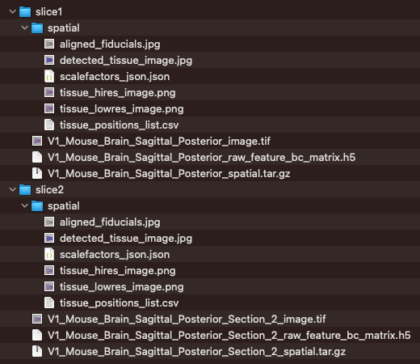
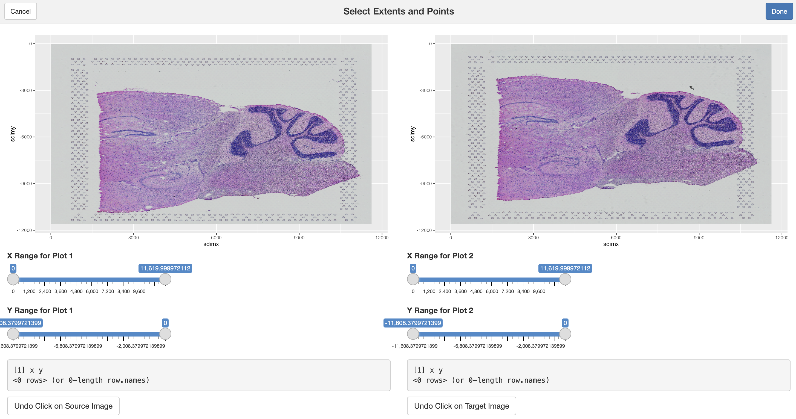
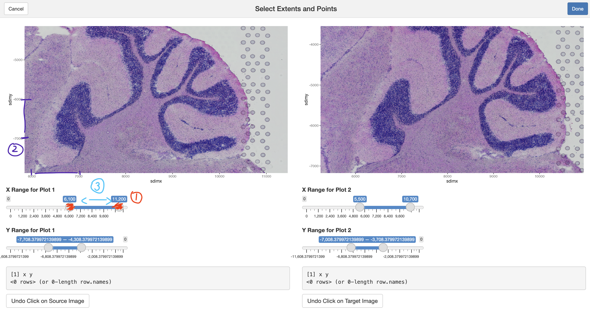
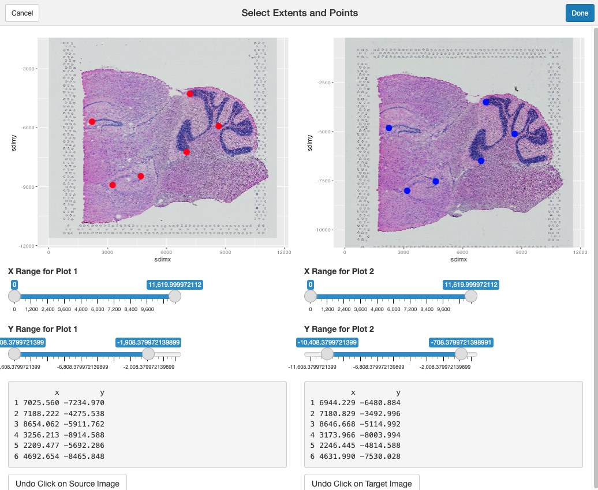
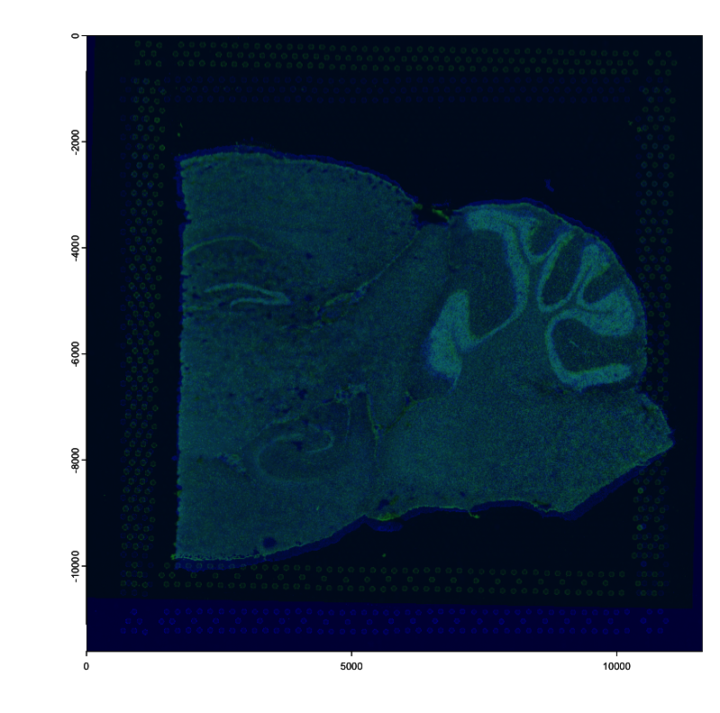
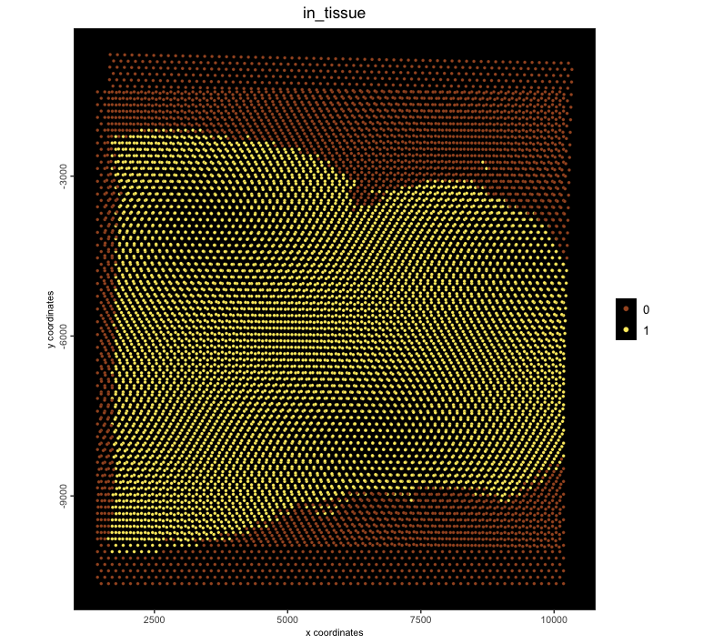
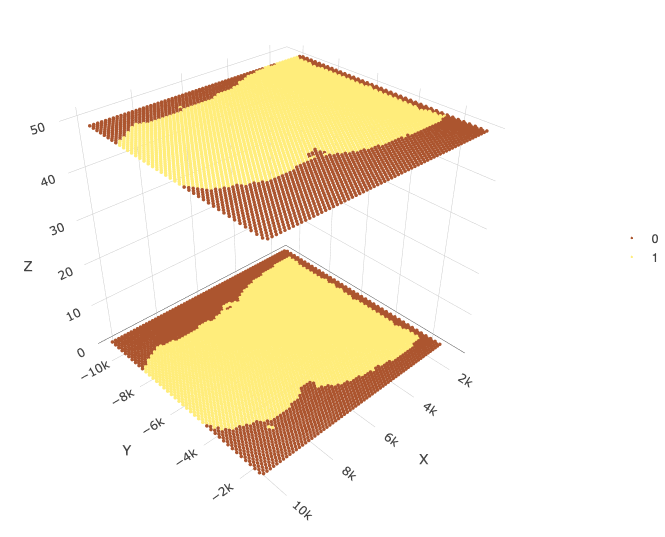

If a spatial assays are performed on multiple adjacent slices from the same tissue block, then they can be combined and analyzed together to either create a multimodal (if multiple assay types were used) or 3D dataset. However, datasets starting from multiple tissue slices also commonly need to be spatially registered into a common coordinate reference frame.
This tutorial walks through how to use Giotto’s manual landmark selection tool to calculate and perform the necessary affine transformation needed to align two sets of data.
# Ensure Giotto Suite is installed
if(!"Giotto" %in% installed.packages()) {
pak::pkg_install("giotto-suite/Giotto")
}1 Datasets
These datasets will be aligned
Needed data to download:
wget https://cf.10xgenomics.com/samples/spatial-exp/1.0.0/V1_Mouse_Brain_Sagittal_Posterior/V1_Mouse_Brain_Sagittal_Posterior_spatial.tar.gz
wget https://cf.10xgenomics.com/samples/spatial-exp/1.0.0/V1_Mouse_Brain_Sagittal_Posterior/V1_Mouse_Brain_Sagittal_Posterior_raw_feature_bc_matrix.h5
wget https://cf.10xgenomics.com/samples/spatial-exp/1.0.0/V1_Mouse_Brain_Sagittal_Posterior_Section_2/V1_Mouse_Brain_Sagittal_Posterior_Section_2_spatial.tar.gz
wget https://cf.10xgenomics.com/samples/spatial-exp/1.0.0/V1_Mouse_Brain_Sagittal_Posterior_Section_2/V1_Mouse_Brain_Sagittal_Posterior_Section_2_raw_feature_bc_matrix.h5After downloading the above, move the files and unzip the spatial zip files into this kind of structure:

1.1 Load datasets
library(Giotto)
data_path <- "/path/to/data/"
slices <- lapply(c(1, 2), function(slice_idx) {
slice_name <- sprintf("slice%d", slice_idx)
slice_path <- file.path(data_path, slice_name)
h5_path <- list.files(slice_path, pattern = ".h5", full.names = TRUE)
scalef_path <- list.files(slice_path, pattern = ".json", full.names = TRUE, recursive = TRUE)
spatlocs_path <- list.files(slice_path, pattern = "positions", full.names = TRUE, recursive = TRUE)
png_path <- list.files(slice_path, pattern = "hires", full.names = TRUE, recursive = TRUE)
createGiottoVisiumObject(
h5_visium_path = h5_path,
h5_json_scalefactors_path = scalef_path,
h5_tissue_positions_path = spatlocs_path,
h5_image_png_path = png_path
)
})
force(slices)[[1]]
An object of class giotto
>Active spat_unit: cell
>Active feat_type: rna
dimensions : 20619, 4992 (features, cells)
[SUBCELLULAR INFO]
polygons : cell
[AGGREGATE INFO]
expression -----------------------
[cell][rna] raw
spatial locations ----------------
[cell] raw
attached images ------------------
images : image
Use objHistory() to see steps and params used
[[2]]
An object of class giotto
>Active spat_unit: cell
>Active feat_type: rna
dimensions : 20398, 4992 (features, cells)
[SUBCELLULAR INFO]
polygons : cell
[AGGREGATE INFO]
expression -----------------------
[cell][rna] raw
spatial locations ----------------
[cell] raw
attached images ------------------
images : image
Use objHistory() to see steps and params used2 Manual landmark selection
interactiveLandmarkSelection() can be used with any
{ggplot} plot object or a giottoLargeImage-inheriting
object.
Here we will extract the attached images and use them in manual landmark selection
2.1 Start tool
images <- lapply(slices, function(x) {
x[[,"image"]][[1]]
})
# align slice 2 to slice 1
landmarks <- interactiveLandmarkSelection(
source = images[[2]], # image to move: slice 2
target = images[[1]] # image to match: slice 1
)
- In datasets with larger images, you can also set
options("giotto.plot_img_max_sample" = 5e6)to set the number of pixels to sample from the source image. Setting a larger value allows a clearer image when zooming in. The default amount of image sampling is 5e5.
2.2 Zooming in and setting aspect ratio
It is easiest to work with this Shiny app by scaling the x and y ranges for both plots (1) until they are showing roughly 1:1 aspect ratio, shown by making sure that the axis ticks are incrementing by the same amount (2) and a convenient level of zoom. From here, you can select pan around the image by sliding the x and y range slider bars (3).

2.3 Place manual landmarks
Clicking on the source and target plots will place landmarks. Placed landmarks can be undone by clicking on the Undo Click on Source Image button present at the bottom of the app on both the source and target plots. Clicking Cancel will return you to the console. Clicking Done finishes the process.
At least 3 pairs of landmarks are needed.

Once Done is clicked, these xy coordinates will be
returned as a list of two data.frames, with the first being
the landmarks from the source, and the latter being those from the
target.
force(landmarks)[[1]]
x y
1 7025.560 -7234.970
2 7188.222 -4275.538
3 8654.062 -5911.762
4 3256.213 -8914.588
5 2209.477 -5692.286
6 4692.654 -8465.848
[[2]]
x y
1 6944.229 -6480.884
2 7180.829 -3492.996
3 8646.668 -5114.992
4 3173.966 -8003.994
5 2246.445 -4814.588
6 4631.990 -7530.0282.4 Calculate affine transform
calculateAffineMatrixFromLandmarks() accepts either the
output data.frames from
interactiveLandmarkSelection() or any pair of nrows x 2
(xy) matrix.
affine_mtx <- calculateAffineMatrixFromLandmarks(
source = landmarks[[1]], # from slice 2
target = landmarks[[2]] # from slice 1
)
force(affine_mtx)
# for reproducibility:
# affine_mtx <- matrix(c(0.99118639, 0.02620535, 191.7005, -0.01845656, 0.98412956, 837.3979, 0, 0, 1), nrow = 3, byrow = TRUE) x y
x 0.99118639 0.02620535 191.7005
y -0.01845656 0.98412956 837.3979
0.00000000 0.00000000 1.0000Plot channel 2 for both the stationary image (colorized blue) and for the moving image (colorized green). Overlapping regions are colored become cyan.
# stationary (target): 1
plot(images[[1]][[2]], col = rev(getMonochromeColors("blue")))
# moving (source): 2
plot(
# `pre_multiply` must be `TRUE` for affines from `calculateAffineMatrixFromLandmarks()`
affine(images[[2]][[2]], affine_mtx, pre_multiply = TRUE),
add = TRUE,
alpha = 0.5,
col = rev(getMonochromeColors("green"))
)
2.5 Align datasets
slices[[2]] <- affine(slices[[2]], affine_mtx, pre_multiply = TRUE)
j <- joinGiottoObjects(slices,
gobject_names = c("slice1", "slice2"),
join_method = "z_stack",
z_vals = c(0, 50) # this is a guess
)
spatPlot2D(j, point_size = 1.2, cell_color = "in_tissue", background_color = "black")
spatPlot3D(j, point_size = 2, cell_color = "in_tissue")
3 Session info
R version 4.4.1 (2024-06-14)
Platform: aarch64-apple-darwin20
Running under: macOS 15.0.1
Matrix products: default
BLAS: /System/Library/Frameworks/Accelerate.framework/Versions/A/Frameworks/vecLib.framework/Versions/A/libBLAS.dylib
LAPACK: /Library/Frameworks/R.framework/Versions/4.4-arm64/Resources/lib/libRlapack.dylib; LAPACK version 3.12.0
locale:
[1] en_US.UTF-8/en_US.UTF-8/en_US.UTF-8/C/en_US.UTF-8/en_US.UTF-8
time zone: America/New_York
tzcode source: internal
attached base packages:
[1] stats graphics grDevices utils datasets methods base
other attached packages:
[1] shiny_1.9.1 Giotto_4.2.0 GiottoClass_0.4.7
loaded via a namespace (and not attached):
[1] colorRamp2_0.1.0 rlang_1.1.4 magrittr_2.0.3
[4] GiottoUtils_0.2.3 matrixStats_1.4.1 compiler_4.4.1
[7] systemfonts_1.1.0 png_0.1-8 vctrs_0.6.5
[10] hdf5r_1.3.10 pkgconfig_2.0.3 SpatialExperiment_1.14.0
[13] crayon_1.5.3 fastmap_1.2.0 backports_1.5.0
[16] magick_2.8.5 XVector_0.44.0 labeling_0.4.3
[19] utf8_1.2.4 promises_1.3.0 rmarkdown_2.29
[22] UCSC.utils_1.0.0 ragg_1.3.2 purrr_1.0.2
[25] bit_4.5.0 xfun_0.49 zlibbioc_1.50.0
[28] cachem_1.1.0 GenomeInfoDb_1.40.0 jsonlite_1.8.9
[31] later_1.3.2 DelayedArray_0.30.0 terra_1.7-78
[34] parallel_4.4.1 R6_2.5.1 RColorBrewer_1.1-3
[37] bslib_0.8.0 reticulate_1.39.0 GenomicRanges_1.56.0
[40] jquerylib_0.1.4 scattermore_1.2 Rcpp_1.0.13-1
[43] SummarizedExperiment_1.34.0 knitr_1.49 IRanges_2.38.0
[46] httpuv_1.6.15 Matrix_1.7-0 igraph_2.1.1
[49] tidyselect_1.2.1 yaml_2.3.10 rstudioapi_0.16.0
[52] abind_1.4-8 codetools_0.2-20 miniUI_0.1.1.1
[55] lattice_0.22-6 tibble_3.2.1 Biobase_2.64.0
[58] withr_3.0.2 evaluate_1.0.1 pillar_1.9.0
[61] MatrixGenerics_1.16.0 checkmate_2.3.2 stats4_4.4.1
[64] plotly_4.10.4 generics_0.1.3 S4Vectors_0.42.0
[67] ggplot2_3.5.1 munsell_0.5.1 scales_1.3.0
[70] gtools_3.9.5 xtable_1.8-4 glue_1.8.0
[73] lazyeval_0.2.2 tools_4.4.1 GiottoVisuals_0.2.11
[76] data.table_1.16.2 cowplot_1.1.3 grid_4.4.1
[79] tidyr_1.3.1 crosstalk_1.2.1 colorspace_2.1-1
[82] SingleCellExperiment_1.26.0 GenomeInfoDbData_1.2.12 cli_3.6.3
[85] textshaping_0.3.7 fansi_1.0.6 S4Arrays_1.4.0
[88] viridisLite_0.4.2 dplyr_1.1.4 gtable_0.3.6
[91] sass_0.4.9 digest_0.6.37 BiocGenerics_0.50.0
[94] SparseArray_1.4.1 ggrepel_0.9.6 farver_2.1.2
[97] rjson_0.2.21 htmlwidgets_1.6.4 memoise_2.0.1
[100] htmltools_0.5.8.1 lifecycle_1.0.4 httr_1.4.7
[103] mime_0.12 bit64_4.5.2